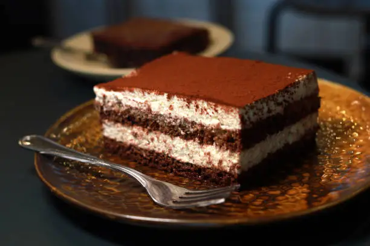

Tiramisu Tarifi

Tiramisu İçin Kullanılacak Malzemeler
Malzeme Grubu
Malzemeler
Kedi Dili Bisküvileri
24 adet kedi dili bisküvisi
Kahveli Karışım
1 su bardağı sıcak su
2 yemek kaşığı granül kahve
1 yemek kaşığı şeker (isteğe bağlı)
Krema
4 adet yumurta sarısı
1/2 su bardağı toz şeker
250 gram mascarpone peyniri
1 su bardağı krema
Üzeri için
Kakao tozu
Hazırlanışı :
Kahveli Karışımı Hazırlayın:
Sıcak suda kahveyi ve şekeri eritin.
Soğumaya bırakın.
Kremayı Hazırlayın:
Yumurta sarılarını ve şekeri benmari usulü (kaynayan suyun üzerine oturtulmuş bir kapta) çırpın.
Krema koyulaşana kadar karıştırın.
Ocaktan alıp soğumaya bırakın.
Mascarpone peynirini ekleyip pürüzsüz hale gelene kadar karıştırın.
Ayrı bir kapta kremayı çırpın ve mascarpone karışımına ekleyip nazikçe karıştırın.
Tiramisuyu Birleştirin:
Kedi dili bisküvilerini kahveli karışıma batırın ve bir tepsinin tabanına dizin.
Üzerine kremanın yarısını yayın.
Bir kat daha kahveli bisküvi dizin ve kalan kremayı yayın.
Üzerini kakao tozu ile kaplayın.
Soğutun:
Tiramisuyu buzdolabında en az 4 saat, tercihen bir gece soğutun.
Servis Yapın:
Soğuk olarak servis yapın.
Püf Noktaları :
Yumurta sarılarını benmari usulü pişirirken sürekli karıştırın, aksi takdirde pişebilirler.
Mascarpone peynirini ve kremayı soğuk kullanın.
Kedi dili bisküvilerini kahveli karışıma çok fazla batırmayın, aksi takdirde çok yumuşak olurlar.
Tiramisuyu ne kadar uzun süre soğutursanız, o kadar lezzetli olur.
İsteğe bağlı olarak, tiramisunun içine çikolata parçaları veya kahve likörü ekleyebilirsiniz.
Anasayfaya dön
Geri Bildirim Formu
Adınız:
Tarif hakkındaki yorumunuz:
Gönder